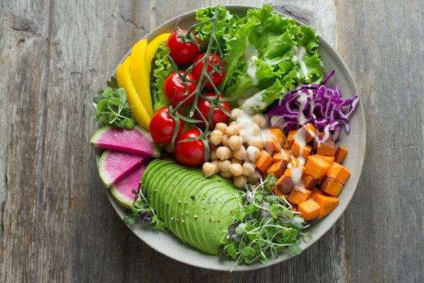

A better shop
starts in
your kitchen.
Know what’s there. Work out what’s next.
Give every grocery shop a little more thought.

TO A BETTER-PREPARED SHOP↙
for real life.
This week is yours
to rearrange.
Tap an ingredient. Change who’s home.
The kitchen and shopping plan respond.
A list with a reason
behind every item.
Start with the food already paid for.
Then prepare what the week still needs.

The next shop
Illustrative NZD prices. Generic ingredients, not retailer product matches or a quote. Oil, seasoning and optional flavourings are extra.
From “what’s for dinner?”
to “ready for your review.”
The proposed connected journey brings the household plan, retailer products and a reviewed trolley into one DO task.
- 01
Prepare
Use the household’s chosen plan and food list.
Working planner - 02
Match
Check the selected store’s products, packs and current prices.
Retailer connection required - 03
Review
Let the customer correct quantities and substitutions.
Try the example above - 04
Approve
Only act on the reviewed trolley. Keep checkout with the customer.
Live DO shopping not enabled
A useful companion
between the shops.
Help a household use what it has, make room for changing plans and arrive at its next shop better prepared.
For a retailer, the question is testable: does this make shopping easier, product choices more relevant and customers more confident?
A pilot hypothesis. No commercial uplift claimed.Let’s prove the useful bit.
proposed pilot
One retailer. A consenting test group.
A defined pickup journey.
Learn with households
Test the kitchen-to-list experience first. Measure list edits, preparation time, confidence and self-reported food use.
Validate one connection
Agree the permitted integration with the retailer. Confirm account, store, price freshness, review and trolley read-back before enabling live actions.
Make a clear decision
Compare with an agreed baseline. Review failures and customer control alongside completion. Expand only if the pilot earns it.
Retailer product and digital teams, a named assembl pilot lead and participating customers agree the scope and escalation route before a live test.
What is working, what is proposed, and what this demo uses +
Working here
The 3D kitchen, household controls, meal swaps and shopping calculations run in your browser. They reuse the Kitchen Machine planner. The full planner also has local receipt-text recognition with human review; that is not food-photo recognition. Open the full Kitchen Machine ↗
Proposed connection
The DO trolley review here is simulated. No account is connected, no live price is fetched, and no trolley is changed. Earlier browser pilots need signed-in end-to-end validation. Real supermarket shopping through DO is not enabled.
Your data and the example
This presentation starts with sample inventory and keeps changes in memory until reload. It does not load saved household data, request a retailer login or send analytics. The sample uses 0.6 adult portions per child; planning dates, prices and trip costs are assumptions. It cannot establish food safety, savings or the cheapest shopping time.
Independent proposal
Built by assembl for discussion. No Woolworths, New World or Foodstuffs partnership or endorsement is claimed. Food images: Unsplash. Kitchen film: Pressmaster / Pexels. 3D scene made for assembl using Three.js.